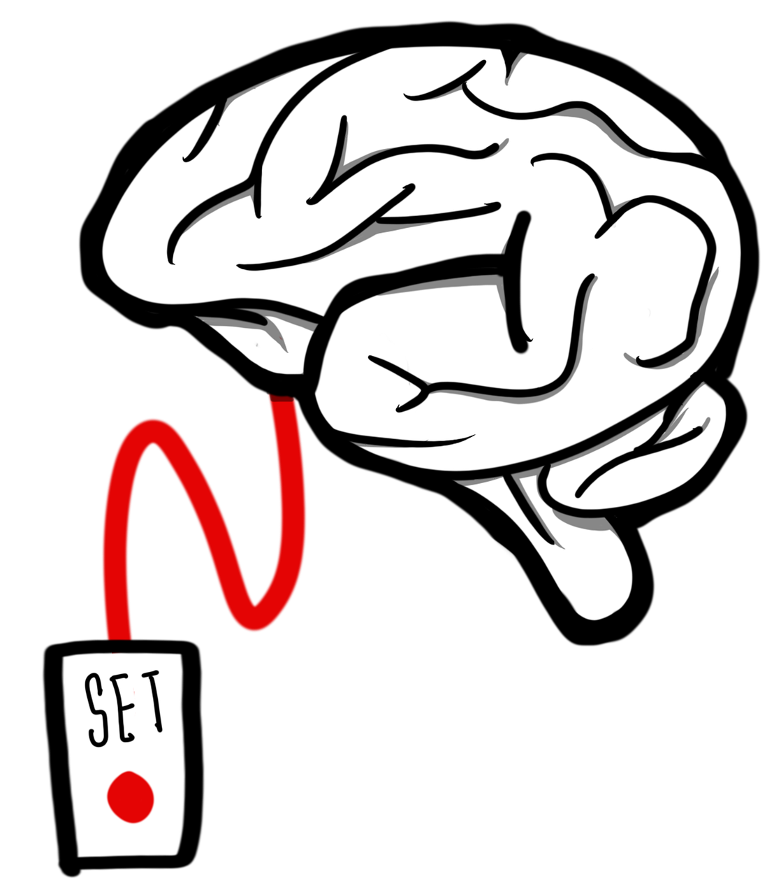

Внимательно слушайте урок

Очень важно внимательно слушать урок. Многие из вас сидят во время прямого эфира в чате, постоянно отвлекаясь на лишние сообщения в нем
Ну это совсем не верный подход в изучения материала. Вам стоит подойти с полной серьезностью, сконцентрировать ваш мозг на прием информации.
Записывать важные моменты с урока - так же очень отличный способ быстрее усвоить материал.
Делайте практику

Практика - неотъемлемая часть обучения, а особенно в верстке. Ибо здесь нужно 40% теории и максимальное количество практики
Знайте, сколько бы вы теории не смотрели, если не начнете заниматься постоянной практикой - не сможете выполнять реальные задачи
ПРАКТИКА. БОЛЬШЕ ПРАКТИКИ!!
Умейте гуглить

Google - это безмерный ресурс c тонной полезной информации, которую вы можете запросто взять и использовать с пользой в процессе обучения
Что там в процессе обучения, даже все профессиональные кодеры часто обращаются в поисковик дабы найти быстрый и правильный метод решения проблемы
Которая ранее им еще не встречалась. Так что, учитесь гуглить ребята. Да вы можете задавать вопросы в чате и вам наверняка помогут.
Но столько информации как поисковик, вам никто никогда не даст.
Сделайте гугл своим лучшим другом по жизни!
Посмотрите бесплатный курс на канале Жени

Многие либо не знают, либо не придают значения тому, что Женя несколько раз упомянул свой бесплатный курс который подготовил бы вас к данному курсу
Кто его не смотрел, вы не представляете какое количество полезной инфы упускаете, уроки записанны в идеальной форме, с интересной подачей
Максимальное количество пользы, в приятном виде. Без капли воды и лишней болтовни - вот что такое формула Фрилансера по жизни)
Оставлю для вас тут ссылочку на этот чудесный плейлист с курсом ➥ТЫЦ НА МЕНЯ⇚
Пользуйтесь сниппетами
Сниппеты? Что же это? Сниппет — это небольшой фрагмент исходного кода для повторного использования.
Главная задача сниппета – упростить работу программиста. Сниппеты можно представить в виде «фрагментов» кода, каждый под своим названием.
В среде разработки Visual Studio Code, есть встроенная возможность создавать свои (кастомные) сниппеты под любые задачи
Начните думать какие сниппеты нужны были бы именно вам и готовьте себе базу сниппетов которые в будущем очень ускорят вашу работу.😊